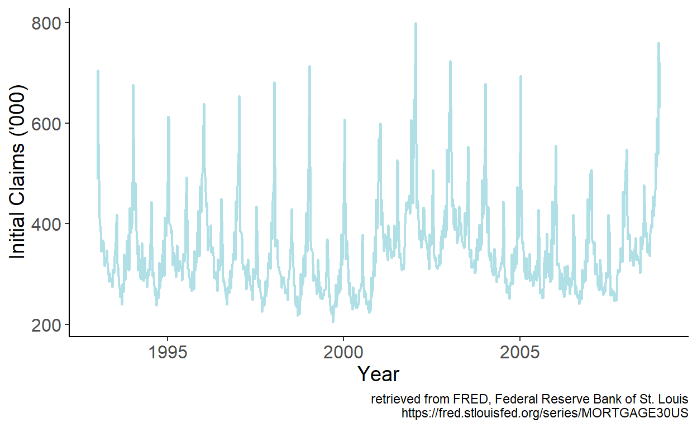
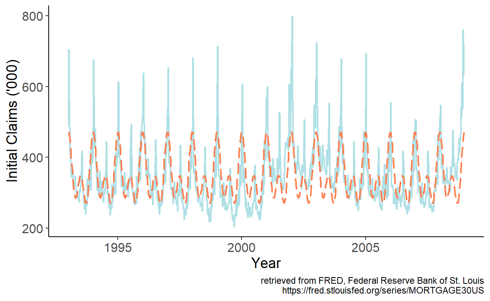
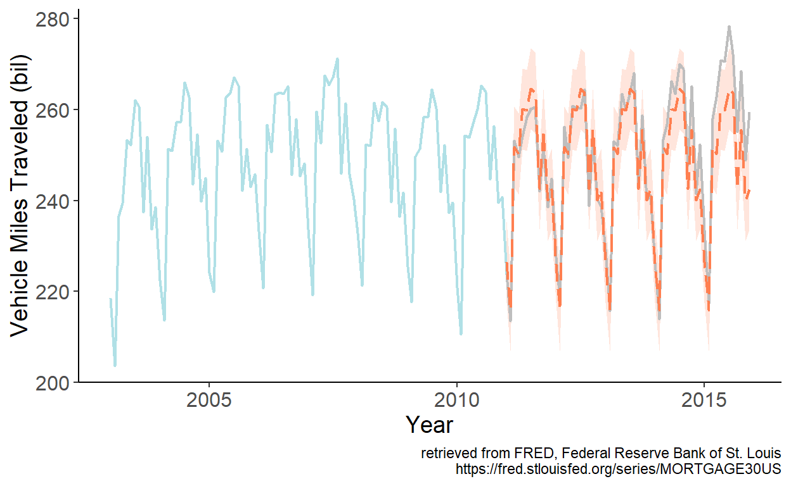

Chapter 5 – Seasonality
5.1 Seasonal Fluctuations in the Data
Seasonality characterizes some economic time series. Prices of agricultural commodities, for example, tend to have a seasonal pattern, owing to relative abundance of the commodity after harvest, and their gradual depletion as the year progresses. Energy sales also tend to have seasonal pattern, due to relatively high demand for energy during the winter (the need for heating) and summer (the need for cooling) months. Seasonality is a self-repeating pattern within a calendar year that arises from the links of economic outcomes to the calendar.
Modeling and forecasting seasonal time series, as it was the case with trending time series, is usually a straightforward exercise.
5.2 Modeling
We typically model seasonality as a monthly or quarterly pattern, but it can also be modeled as a higher frequency pattern (e.g. weekly or daily).
One way to account for seasonality in the data is to “remove” it prior to the use of the series (i.e., work with a seasonally adjusted time series). Indeed, some economic time series are only/also available in a seasonally-adjusted form.
Otherwise, and perhaps more interestingly, we can incorporate the seasonal component into a regression setting.
5.2.1 Seasonal dummy variables
A seasonal model, typically, is given by: \[y_t = \sum_{i=1}^{s}\gamma_i d_{it} + \varepsilon_t,\] where \(s\) denotes the frequency of the data, and \(d_{it}\) takes the value of one repeatedly after every \(s\) periods, and is zero in all other periods, so that \(\sum_{i} d_{it} = 1\), \(\forall t\). Each \(\gamma_i\) is, in effect, an intercept of a given season.
Alternatively the seasonal model can be rewritten as: \[y_t = \alpha + \sum_{i=1}^{s-1}\delta_i d_{it} + \varepsilon_t,\] in which case \(\alpha\) is an intercept of an omitted season, and \(\delta_i\) represents a deviation from it during the \(i^{th}\) season. This is a more typical form of a seasonal model.
Both variants of a seasonal model result in an identical fit and forecasts. Indeed, the two models are equivalent. Assuming the dummy variable associated with a season \(s\), \(d_{s}\), was dropped, \(\alpha=\gamma_s\), and \(\alpha+\delta_i=\gamma_i\;~\forall~i\ne s\).
Consider a monthly series of vehicle miles traveled in the United States (sourced from the online data portal of the Federal Reserve Bank of St. Louis) spanning the January 2003 – December 2015 period.
Figure 5.1: Vehicle miles traveled in the U.S.

Seasonality is apparent in the series. We can approximate the seasonality using monthly dummy variables. Specifically, we can estimate the model parameters by regressing vehicle miles traveled, which we denote by \(y\), on intercept and 11 monthly dummy variables, omitting the dummy variable associated with the month of December. Fitted values are then given by: \(\hat{y}_t = \hat{\alpha}+\sum_{i=1}^{11}\hat{\delta}_{i}d_{it}\), which we overlay onto the time series:
Figure 5.2: Fitted monthly dummy variables
As observed, the fitted series mimic the seasonal pattern of the U.S. vehicle miles traveled exceedingly well.
5.2.2 Seasonal harmonic variables
When dealing with weekly or daily data, the dummy variable approach of modeling seasonality may not be practical, nor efficient in most instances, as that will require estimating another 51 or 364 parameters. A way to model seasonality without giving up too many degrees of freedom is by using the so-called seasonal harmonic variables, which are terms from a Fourier series.
Fourier terms can be applied to model seasonality at any frequency. Suppose, for example, we are working with monthly time series. A model with Fourier terms will have the following form: \[y_t = \alpha+\sum_{k=1}^{K}\left[\beta_{1k}\sin\left(\frac{2\pi kt}{12}\right)+\beta_{2k}\cos\left(\frac{2\pi kt}{12}\right)\right]+\varepsilon_t,\] where the value of \(K\) can be determined using an information criterion (e.g., AIC or SIC).
Consider a weekly series of initial unemployment claims filed by individuals after a separation from an employer in the United States (sourced from the online data portal of the Federal Reserve Bank of St. Louis) spanning the January 1993 – December 2008 period.
Figure 5.3: Initial unemployment claims in the U.S.
An apparent seasonal pattern is present in the series. It seems sensible to approximate the seasonality using Fourier series. Specifically, we can regress initial claims, which we denote by \(y\), on sine and cosine terms of up to order two, from a Fourier series. Fitted values are then given by: \(\hat{y}_t = \hat{\alpha}+\sum_{k=1}^{2}\left[\hat{\beta}_{1k}\sin\left(\frac{2\pi kt}{52.143}\right)+\hat{\beta}_{2k}\cos\left(\frac{2\pi kt}{52.143}\right)\right]\), which we overlay onto the time series:
Figure 5.4: Fitted Fourier terms up to order two
The fitted series mimic the general seasonal pattern reasonably well. There are some major departures at times, however. Especially so in the first week of the year, for example. While we could add higher order terms from a Fourier series to try and better approximate the seasonal pattern, perhaps a more efficient approach would be to simply add a dummy variable for the first week of the year, which should account for the beginning-of-calendar-year spike in the series.
5.3 Forecasting
As it was the case with trend models, the predictors of the seasonal models are pre-determined. This means, after fitting the model, we can readily obtain point and interval forecasts for any horizon \(h\).
To illustrate, consider the seasonal dummy variable model. A future realization of the random variable is: \[y_{t+h} = \alpha + \sum_{i=1}^{s-1}\delta_i d_{i,t+h} + \varepsilon_{t+h}.\]
Point forecast of \(y_{t+h}\) is: \[\hat{y}_{t+h|t} = E(y_{t+h}|\Omega_t;\hat{\theta}) = \hat{\alpha} + \sum_{i=1}^{s-1}\hat{\delta}_i d_{i,t+h}\]
As before, we will assume that parameter estimates are equal to the true parameters of the model, so that the forecast error is: \[e_{t+h|t} = y_{t+h} - y_{t+h|t} = \varepsilon_{t+h}\]
The forecast variance is: \[\sigma_{t+h|t}^2 = E(e_{t+h|t}^2) = E(\varepsilon_{t+h}^2) = \hat{\sigma}^2_{\varepsilon},\;~~\forall\;h\]
The interval forecast is: \[y_{t+h|t} \pm 1.96 \hat{\sigma}_{\varepsilon}.\]
To illustrate the foregoing, let’s revisit the U.S. vehicle miles traveled data, and obtain point and interval forecasts for periods from January 2011 onward based on parameter estimates using data up to and including December 2010.
Figure 5.5: Seasonal forecast
Page built: 2022-10-08 using R version 4.1.2 (2021-11-01)